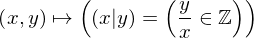
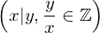
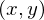
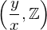
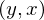

In [1]:
import proveit
# Automation is not needed when only building an expression:
proveit.defaults.automation = False # This will speed things up.
proveit.defaults.inline_pngs = False # Makes files smaller.
%load_axiom_expr # Load the stored axiom expression as 'stored_expr'
# import the special expression
from proveit.numbers.divisibility import divides_def
In [2]:
# check that the built expression is the same as the stored expression
assert divides_def.expr == stored_expr
assert divides_def.expr._style_id == stored_expr._style_id
print("Passed sanity check: divides_def matches stored_expr")
In [3]:
# Show the LaTeX representation of the expression for convenience if you need it.
print(divides_def.latex())
In [4]:
# display the expression information
divides_def.expr_info()
Out[4]:
| core type | sub-expressions | expression | |
|---|---|---|---|
| 0 | Operation | operator: 1 operand: 2 |  |
| 1 | Literal |  | |
| 2 | Lambda | parameters: 9 body: 3 |  |
| 3 | Operation | operator: 4 operands: 5 |  |
| 4 | Literal |  | |
| 5 | ExprTuple | 6, 7 |  |
| 6 | Operation | operator: 8 operands: 9 |  |
| 7 | Operation | operator: 10 operands: 11 |  |
| 8 | Literal |  | |
| 9 | ExprTuple | 17, 16 |  |
| 10 | Literal |  | |
| 11 | ExprTuple | 12, 13 |  |
| 12 | Operation | operator: 14 operands: 15 |  |
| 13 | Literal |  | |
| 14 | Literal |  | |
| 15 | ExprTuple | 16, 17 |  |
| 16 | Variable |  | |
| 17 | Variable |  |